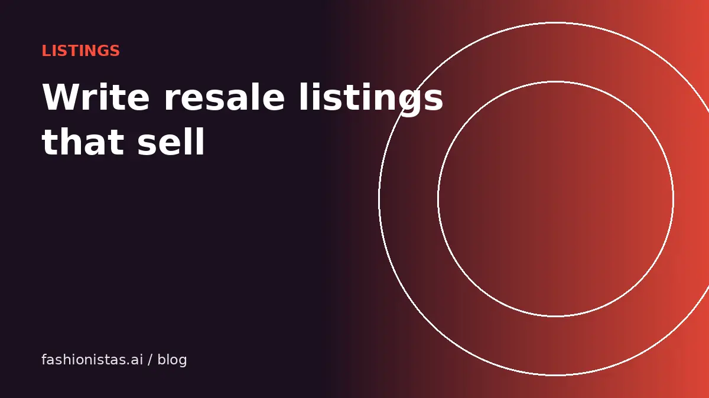

How to write resale titles and descriptions that get found and sold

Resale apps are search engines. Buyers type what they want, and the app matches it against your title, your structured fields and your description. A great item with a vague title is invisible. This guide covers how each part of a listing gets used, the word order that gets found, how to describe condition so buyers trust you, and a template you can reuse.
How resale search works
Every app weighs things a little differently, but the pattern is consistent:
- Structured fields like brand, category, size, color and condition are filters. Buyers narrow by these before reading anything. Leave one empty and you drop out of filtered results.
- The title is the main text match, so it should contain the words people actually type.
- The description is a secondary match and the place to answer fit and condition questions.
- Activity such as recent listing, price drops, likes and shares affects how often a listing is shown on some apps.
So fill every field, put the most-searched words in the title, and use the description to close the sale.
Title formula
Use this order and adjust to each app's character limit (Poshmark, eBay and Mercari allow 80 characters):
Brand + style or model + item type + key detail + size
Examples:
- *Madewell Perfect Vintage Jean High Rise Medium Wash 27*
- *Patagonia Better Sweater Fleece Jacket Navy Men's L*
- *Reformation Midi Slip Dress Silk Floral Size 4*
- *Vintage 90s Levi's 550 Relaxed Jeans Made in USA 34x30*
What to include, in priority order: brand, the style name if known (buyers search these), item type in the words people use ("jeans", not "denim bottoms"), the detail that sets it apart (color, material, wash, era), and size.
What to skip: "cute", "gorgeous", "must have", "L@@K", emojis and all caps. They waste characters and nobody searches them.
Descriptions that answer questions
A good description reads like a helpful shop assistant. Use this order:
- One-line summary: what it is and why it's good. "Classic Patagonia Better Sweater in navy, warm and barely worn."
- Condition: honest and specific. See the next section.
- Measurements: taken flat. Pit to pit, length, waist, inseam, rise as relevant. Our measuring guide shows exactly how.
- Fit notes: "fits true to size", "runs small, best for a size 6", "oversized fit".
- Materials: from the fabric label. "100% merino wool" is a search term and a selling point.
- Flaws: each one, with a photo reference.
- Household notes: smoke-free and pet-free if true. Buyers ask.
- Shipping and bundles: "Ships next business day. Bundle for a discount."
Describing condition honestly
Use condition words consistently and back them up with photos:
| Term | Use it when |
|---|---|
| New with tags | Never worn, original tags attached |
| New without tags | Never worn, no tags |
| Excellent / like new | Worn a few times, no visible wear |
| Good | Light signs of wear, such as slight fading or minimal pilling |
| Fair | Noticeable wear or flaws, all described |
Be specific about flaws: "small faint mark on left cuff, about 1 cm, see photo 8" is better than "minor flaws". Specific honesty sells, because buyers trust the rest of your listing when you're upfront about the bad parts. It also prevents "not as described" returns, which cost you shipping both ways.
Tailoring to each app
- Poshmark: fill brand from the list, set the original price if you know it, choose a precise category. Share the listing after publishing.
- Depop: no separate title in the same way, so the first line of your description does that job. Write casually and add up to five relevant hashtags, such as #vintage, #y2k, #90s, #streetwear or #levis.
- Mercari: title, then description, then fill every item detail. Be accurate about shipping weight.
- eBay: item specifics are critical; eBay uses them heavily in search filters. Fill as many as apply.
- Grailed: designer name exactly as Grailed lists it, detailed measurements and condition notes.
When you crosslist, keep a master version and make these small tweaks per app.
A copy-ready template
[Brand] [Style] [Item] [Key detail] [Size] [One-line summary.] Condition: [grade]. [Specific notes.] Measurements (flat): pit to pit [x] in, length [x] in, [waist/inseam/rise]. Fit: [true to size / runs small / oversized]. Material: [from label]. Flaws: [each one, with photo number] or "none I can see". From a smoke-free, pet-free home. Ships next business day. Bundle for a discount.
The fashionistas.ai listing tool drafts this for you from your photos: it reads the brand and size labels, writes the title and description, and suggests a price. You review and edit, then copy it to each app.
Before and after: a real-world rewrite
Before: "Cute jacket!! Barely worn, super warm. Size M."
After: "Patagonia Better Sweater Fleece Jacket Navy Women's M. Warm full-zip fleece, worn a handful of times, excellent used condition with no pilling or marks. Measurements flat: pit to pit 20 in, length 25 in, sleeve 30 in. Fits true to size. 100% polyester fleece. Smoke-free, pet-free home. Ships next business day."
The second version shows up for searches on "Patagonia", "Better Sweater", "fleece jacket" and "navy", answers fit and condition questions, and reads like a trustworthy seller. It took one extra minute to write.
Update listings that don't sell
If a listing gets views but no likes, the cover photo or price is usually the problem. If it gets likes but no offers, the price or missing information is. Rewrite the title with better keywords, add measurements, swap the cover photo, or drop the price about 10%. Small edits can also refresh a listing's visibility on some apps.
Keywords: finding the words buyers use
- Start typing your item into an app's search bar and look at the autocomplete suggestions. Those are real searches.
- Look at sold listings for the same item and note the words in their titles.
- Use both the brand's style names and plain descriptions. Someone might search "Lululemon Align" or "black leggings".
- Include era terms for vintage (70s, 80s, 90s, Y2K) only when accurate. Our vintage dating guide helps.
Then make sure the photos match the promise. Good photos and a great title work together.
FAQ
What should a resale listing title include?
Brand, style or model name, item type, a key detail such as color, material or era, and size, in that order, within the app's character limit.
How long should a resale listing description be?
Long enough to cover a summary, condition, measurements, fit, materials, flaws and shipping. Usually 60 to 150 words works well.
Should I use hashtags on Depop?
Yes, a few relevant ones. Depop allows up to five hashtags, and buyers use them to browse styles like vintage, y2k and streetwear.
How do I describe flaws in a listing?
Name each flaw specifically, give its size and location, refer to the photo showing it, and price accordingly.
Does filling in every field help sales?
Yes. Fields like brand, size, color and condition are filters buyers use. Empty fields mean your listing doesn't show up in filtered searches.